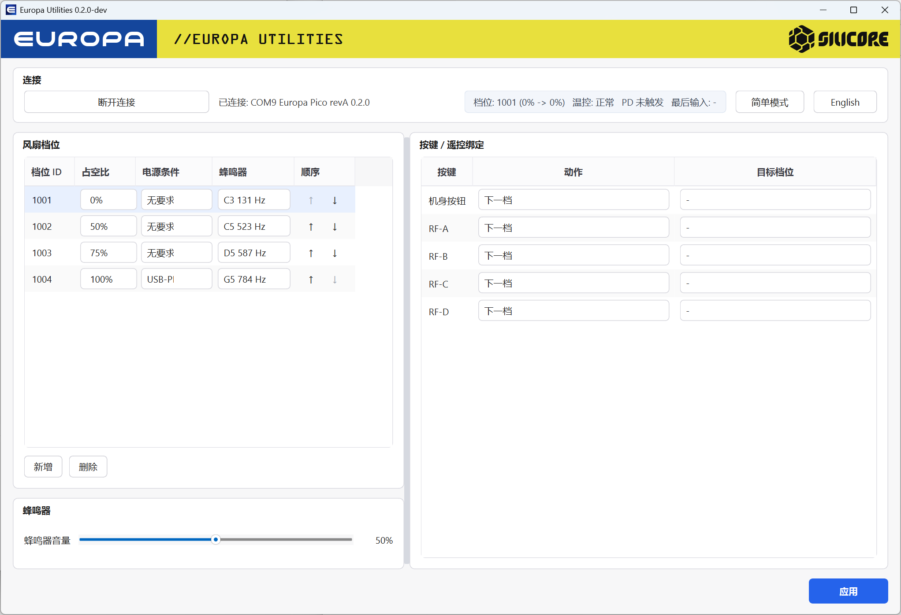
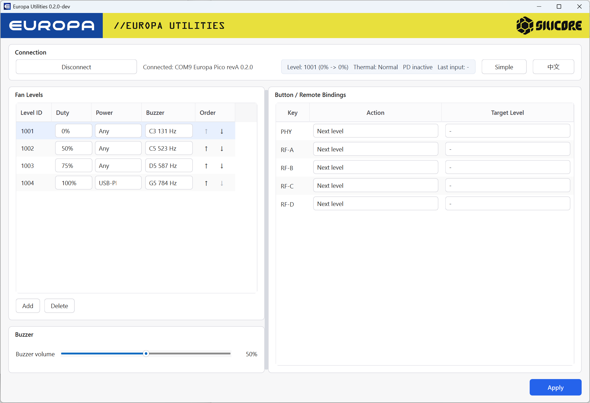

自动连接
自动检测一个 Europa USB CDC 设备，并读取产品、硬件、固件和协议能力信息。
用于 Silicore Europa Pico 与 Europa Core Pro 的 PC 配置、服务、固件更新和生产测试工具。


自动检测一个 Europa USB CDC 设备，并读取产品、硬件、固件和协议能力信息。
配置风扇档位、档位顺序、温控策略和按钮/遥控绑定，并支持 JSON 导入导出。
读取 Europa Pico 与 Core Pro 事件日志，导出 CSV，并生成生产测试报告。
从 .eufw 固件包更新 Europa Pico 与 Europa Core Pro，并在写入前检查设备兼容性。
Core Pro 制造固件可使用 USB、ADC、传感器、按键、蜂鸣器、风扇和屏幕测试流程。
工具界面和下载页均支持中文与 English，便于生产、售后和海外设备维护。